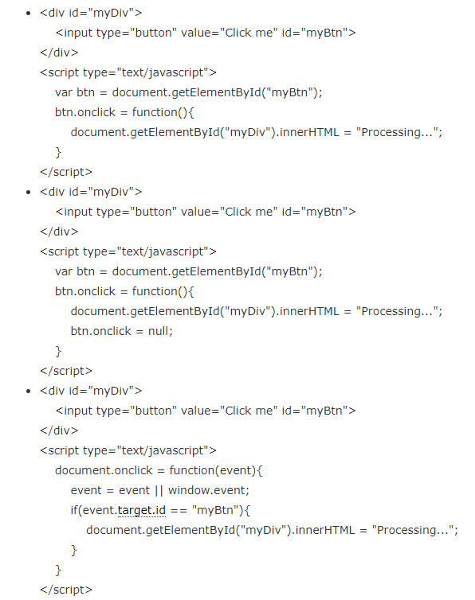

1.当一个对象已经不需要再使用本该被回收时，另外一个正在使用的对象持有它的引用从而导致它不能被回 收，这导致本该被回收的对象不能被回收而停留在堆内存中，这就产生了内存泄漏。 2.内存泄露是指一块被分配的内存既不能使用，又不能回收，直到浏览器进程结束。浏览器中也是采用自动 垃圾回收方法管理内存，但由于浏览器垃圾回收方法有bug，会产生内存泄露。 3.当页面中元素被移除或替换时，若元素绑定的事件仍没被移除，在IE中不会作出恰当处理，此时要先手工 移事件，不然会存在内存泄露。
onclick=null 能够清除点击事件，但是会造成这个按钮不能再点击，因为点击事件已被删除，所以只适用 单次的点击